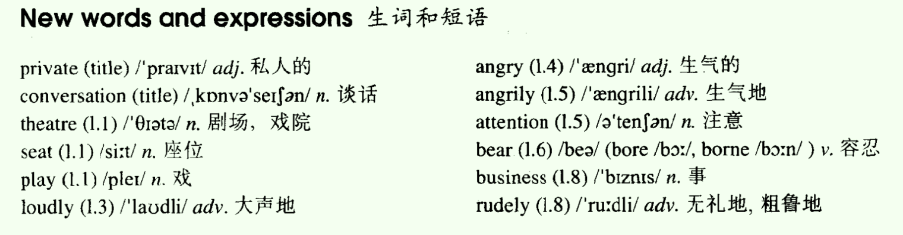
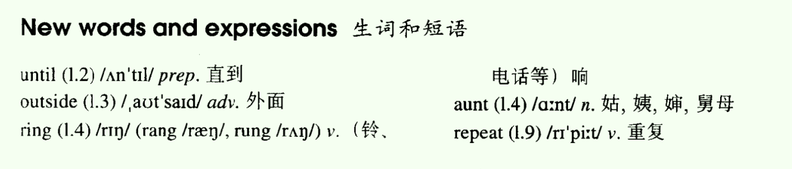
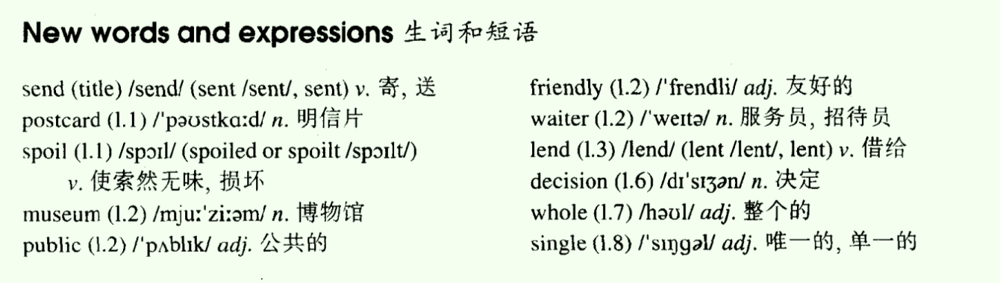
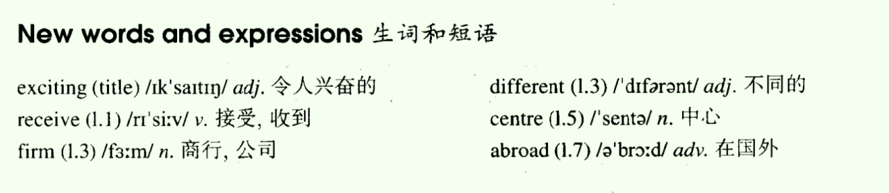
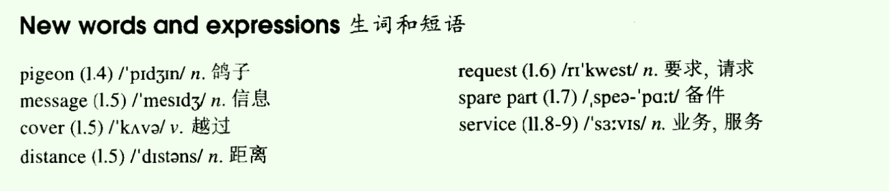
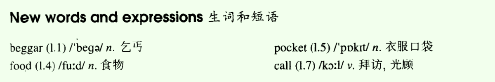
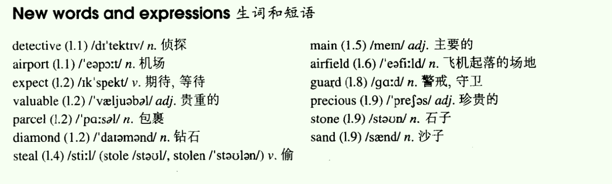
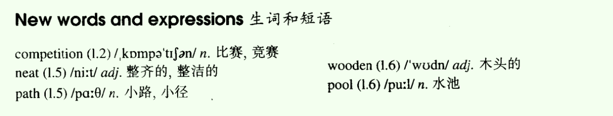

- Lesson 01 A private conversation
- Lesson 02 Breakfast or lunch
- Lesson 03 Please send me a card
- Lesson 04 An exciting trip
- Lesson 05 No wrong numbers
- Lesson 06 Percy Buttons
- Lesson 07 Too late
- Lesson 08 The best and the worst
Lesson 01 A private conversation
一、单词讲解
1、private：adj.私人的、私立的、隐私的、私下的；
- a private conversation
- a private school、car
- do sth. in private
- 反：public：adj.公共的、公开的
- privacy：n. 隐私
2、conversation：n.谈话；
- 在英语中，对词性（名称、动词）的界限是十分明确的，中文中不是很明确；
- 若一个词是名词性的，但意思包含着动作性的，可以搭配一个动词变成动作；比如：have/hold a conversation、pay attention
3、theatre：n.剧院、戏院；
- 清辅音：/θ/；theatre
- 浊辅音：/ð/；with
- go to the theatre
4、seat：n、座位；
- have/take a seat
- have your seat：做你的座位
5、angry：adj.生气的；angrily：adv.生气地
- 形容词通常用来修饰名词，副词用来修饰动词和句子；
- The angry boy shouted angrily.
- 通常，形容词+ly=副词；英语中，所有的规律都是普遍的，不是绝对的；
6、attention：n.注意；
- pay attention to sb./sth.
- attract/catch/draw one's attention：吸引别人的注意；draw：拉、牵引过来
- May I have your attention, please?：请注意（对别人要求，可以换成我可以拥有你的注意力吗，语气更客气）
- Attention, please.：请注意（更着急些）
All

- stand也可以表示容忍；
二、课文&语法讲解
1、句子
- 按
结构划分：- 简单句
- 并列句：由多个简单句连接而成的；
- 复合句：由多个简单句连接而成的；
- 按
用途划分：- 陈述句
- 疑问句
- 祈使句
- 感叹句
- 按
2、简单句
简单句：最简单的句子，描述一件事的（物质 + 运动），一个谓语动词；
a. n.（描述的对象） + v.（描述的内容）：主语 + 谓语，主谓（vi.）
- 在古汉语中，谓表示说话，主语是说话的对象，谓语是说话的内容；
- 一主搭配一谓（必备）；
- Birds fly.
b. 主谓（vt.）宾；
- I love you. 代词（I）：通常代替名词的，和名词效果一样；
- vi：不及物动词，自己独立完成的；
- vt：及物动词，涉及到其他对象，才能完成；
- 区分vi.、vt.：根据意思判断、加介词就是不及物动词（I look at you）；
c. 主谓（vt.）双宾
- You ask me a question.
d. 主谓（vt.）宾补
- I find Hong Kong Beautiful.
- 补：宾语的补充语，补充说明宾语；
以上动词都是实意动词，对应实实在在的意思；
e.主系表
- I very Happy ??? 不能构成句子，缺谓语动词；不能加实意动词（加了会改变意思），必须加上没有实意动词（不会改变原意），比如be动词（连系动词）；
- I am very happy.
- 系动词是一个特殊的谓语动词，还是动词但没有实意；
3、系动词
be动词（单独出现的才是，不是所有的be动词都是系动词；若还有其他动词，则be动词起帮助作用，为助动词）
- I am a teacher.
- I am studying English. （有两个动词，be动词不是系动词）
get、become、turn、go、grow：意思为“变得”时才是系动词，否则不是；
- He gets very angry. 主系表
- He got a new car.
look、sound、smell、taste、feel（感官动词）：当意思为
看、听、闻...起来才为是系动词，否则不是；- She looks beautiful.
- She looks at me.
4、简单句的变化
- 保证句子结构不变的情况下，让句子难度提升，内容描述更加具体充分；如Birds fly.
- a. 改变时态：Birds will fly.
- b. 变否定：Birds will not fly.
- c. 加入修饰限定（用形容词修复名称，用副词修饰动词）：Little birds fly happily.
- d. 在句子中加上介词短语，表示时间、地点：In autumn birds fly in the sky.
- In autumn little birds will fly happily in the sky.
- 保证句子结构不变的情况下，让句子难度提升，内容描述更加具体充分；如Birds fly.
5、课文
- Last week I went to the theatre.（主谓）
- I had a very good seat. （主谓宾）
- The play was very interesting. （主系表）
- I did not enjoy it. （主谓宾）：did没有实意，和enjoy是一个组合；简单句不代表只有一个谓语单词，而是一个谓语组合
- A young man and a young woman were setting behind me. （主谓）
- They were talking loudly. （主谓）
- I got very angry. （主系表）get angry；系动词后面要加形容词修饰，而不是副词；
- Things got bad recently.
- I was ill, but I'm getting better.
- I turned round. turn around的意思和其一样；
- I looked at the man and the woman angrily.
- They did not pay any attention.
- In the end , I could not bear it.
- in the end
- at last
- finally
- eventually
- I turned round again.
- 'I can't hear a word!' I said angrily.
- 'It's none of your business,' the young man said rudely. 'This is a private conversation!'
- none of ...：...都不 （三个及以上）
- neither of ...：...都不 （两个）
- We like travelling.
- None of us like travelling.
6、简单陈述句的语序
- 表示时间的句子：时间状语从句，对句子进行补充说明，可以放在句首，可以放在句尾，也可以放在句中；
三、知识扩展
1、写句子：写正确，写更好
- 简单句的变化
- Girls play games.
- Girls are playing games.
- Lovely Girls are playing games happily.
- Thousands of lovely girls are playing games very happily.
- After class thousands of lovely girls are playing games very happily on the playground.
- 简单句的变化
2、看句子：将补充说明都去掉，由长到短
- 判断简单句的类型
- Speakers of these cultures often read oral presentations from carefully retain manual scripts. （主谓宾）
- 先找谓语动词，找到几个谓语动词就是几件事；
- But in school we never give a child a chance to detect his mistakes. to do是非谓语动词，不能作为谓语，这里to do为目的的状语
- Soon he becomes dependent on the expert.
- Strong emotional bonds between mothers and infants increase children's willingness to explore the world ...
- 判断简单句的类型
Lesson 02 Breakfast or lunch
一、单词讲解
1、until：prep.直到；
- until now
- until lunchtime
2、outside：adv.外边；
- inside
- upside down 上下颠倒
3、ring：v.（铃、电话等）响；n.铃响、环型的东西（圈、戒指、树的年轮等）
- rang：过去时；rung：完成时、被动语句
- sing（sang、sung）
- drink（drank、drunk）
- swim（swam、swum）
- begin（began、begun）
4、repeat：v.重复；
- 口语中不建议直接使用，语气太强硬，使用pardon，对方就知道要重复一下了；
- re-：再做一次；retell、rewrite、rediscover（重新发现）、rebroadcast
All

- aunt、uncle
二、课文&语法讲解
1、本文重点
- 一般现在时
- 现在进行时
- 感叹句
2、时态
- 描述发生的一件事的时间和状态（两个维度）；
- 如何体现时态：通过谓语动词的变化；
- 一共有16种时态，常用8种；
3、一般现在时
a. 形式（谓语动词）
- a）原形：I tell you a secret.
- b）第三人称单数（do/does；为什么使用三单形式，主要是为了和三单的主语搭配)：He tells you a secret.
- 动词变三单形式：
- +s；
- s、x、ch、sh结尾的加es；
- 辅音+y结尾的，变y为i，再加es；
- 特殊的，do（does）、go（goes）、have（has）等；
- 和名词变复数原理一样的，只是含义不一样；
- 哪些主语是三单的：
- he、she、it；Your friend tells you a secret.
- 可数名词的单数；
- 不可数名词；
- 动词变三单形式：
b. 用法
- a）表示 现在 经常性习惯性 的动作；
- We have the English class every day.
- He often gets up late.
- 常常和经常性的词组连用：every day等；
- 和频度副词连用：always、usually、often、sometimes、never；注意这些频度副词还可以和其他时态连用；
- b）表示现在的状态、常态；
- I am a teacher.
- We are happy together.
- c）表示永恒；（一般现在时特有）；
- 客观事实：The earth is round.
- 科学真理：The earth moves around the sun.
- 名言警句：Practice makes perfect.
- a）表示 现在 经常性习惯性 的动作；
c. 否定、疑问
- 有be的直接变be；
- He is happy
- He is not happy.
- Is he happy?
- How is he?
- 实意动词（不能直接变否定疑问，加一个帮助的词do/does）
- You like English.
- You do not like English.
- Do you like English?
- What do you like?
- He likes English.
- He does not like English.
- Does he like English?
- What does he like?
- 有be的直接变be；
4、现在进行时
a. 形式：am/is/are + doing
b. 用法：
- a）表示现在正在进行的事情；
现在可以表示短时的现在（此时此刻，和说话同时），也可以表示广义的长时间的现在（现阶段）；- We are studying English now.
- J.K. Rowling is writing another book this year.
- b）特殊用法：表示将来确定要发送的事情；（不能表示所有的将来，还有一般将来时）
- I am coming to see you.
- We are arriving at ...
- The old man is dying. 这个老人奄奄一息将要死亡。
- a）表示现在正在进行的事情；
c. 否定、疑问
- 一般进行时都有be，所以比较容易，直接加not、提前；
- He is listening.
- He is not listening.
- Is he listening?
- What is he doing？
- 一般进行时都有be，所以比较容易，直接加not、提前；
一般现在时和现在进行时的相同点都是现在，不同点是强调的状态；
5、课文
- It was Sunday. 一般过去时
- It用法：
- 代词，它、不确定性别： Who is it？
- 表示抽象的概念（日期、时间、天气、长度、距离等）：It is sunny.
- 形式主语；
- It用法：
- I never get up early on Sundays. 一般现在时
- 这里上下文的时态不一致（并不要求必须一致）；
- I sometimes stay in bed until lunchtime. 一般现在时
- in：在...里面
- on：在...上面
- stay in bed、stay on bed：主要取决于床的性质，in软床（身体陷进去了），on硬板床；
- sit on the chair，也可以in the chair（比较极端了）；in the sofa（一般为软的）
- Last Sunday I got up very late.
- I looked out of the window.
- It was dark outside. It这里表示天气；
- 'What a day!' I thought.（think）
- 'It's raining again.' 是过去发生的事情，但是这里是引用当时说的话，还原当时的场景；
- Just then, the telephone rang.
- It was my aunt Lucy. Lucy这里同位语，解释说明
- 'I've just arrived by train,' she said. 现在完成时
- 'I'm coming to see you.' 现在进行时表示确定的将来
- 'But I'm still having breakfast,' I said.
- 可以eat breakfast，但是英语中更喜欢用更加灵活的词表示相同的意思，比如have，可以表示吃、喝、玩
- 在三餐的前面，不加任何冠词a、the，直接使用have
- 三餐：breakfast、lunch、supper（晚餐）；dinner（正餐）、brunch（早午饭）
- meal，前面要加a
- 'What are you doing?' she asked.
- 'I'm having breakfast,' I repeated.
- 'Dear me,' she said. 'Do you always get up so late? It's one o'clock!'
- It was Sunday. 一般过去时
6、感叹句
- 这里研究的是书面语的感叹句，口语中的感叹句是没有办法研究的，随便一个单词、词组，只要加重语气就是感叹句，比如
what!； - 书面语的感叹句：（两种，区别在于感叹的成分不一样）
- What + n./n.词组!
- What a wonderful world!
- How + adj./adv.!
- How interesting!
- What + n./n.词组!
- 感叹句还有一种变形；句子要求有一主一谓；感叹句可以有主谓，但是加了没有多大用，一般都省略掉；
- What a wonderful world it is!
- 这里研究的是书面语的感叹句，口语中的感叹句是没有办法研究的，随便一个单词、词组，只要加重语气就是感叹句，比如
三、知识扩展
- 1、一般现在时/现在进行时
- Right now I'm in class. I am setting at my desk.
- I usually sit at the same desk in class every day.
- Ali speaks Arabic.
- Arabic is native language, but right now he is speaking English.
- A: Does it rain a lot in southern California?
- B: No. The weather is usually warm and sunny.
- A: I'll take those-the yellow flowers.
- B: Here you are, mister. Are they for a special occasion?
- A: I am buying them for my wife. I buy her flowers on the first day of every month.
Lesson 03 Please send me a card
一、单词讲解
1、send：v.（sent、sent）寄、送；派、发
- send a letter
- send a message
- send a card
- send me a card = send a card to me
- send sb. sth. = send sth. to sb.
- send for a doctor/taxi 派叫一个医生，这里for表示目的
2、postcard：n. 明信片
- post + card
- post office、postcode、postman、postbox/mailbox
- a Christmas card
- a credit card 信用卡
- an ID card（an identify card）
- play cards 扑克牌
3、spoil：v.（spoiled or spoilt）使索然无味，损坏
- dream：dreamed/dreamt
- learn：learned/learnt
- 宠坏，溺爱：Don't spoil your children.
- 食物腐烂：Put the food in the fridge，or it will spoil soon.
- spoil、damage、destroy、ruin
- spoil：并不是表示这个东西真的坏了，指的是精神上的损坏
- damage：表示这个东西真的坏了，但可被修复
- destroy：表示这个东西真的坏了，是彻底的损坏，不可被修复；强调的是大规模性的、短时间之内性的、猛烈性的
- ruin：表示这个东西真的坏了，是彻底的损坏，不可被修复；强调的是长时间的、慢慢的、一点点的损坏
4、museum：n.博物馆；
- a historical museum
- a science museum
- the Palace Museum：故宫（博物院）
5、public：adj.公共的；n.公众、大众
- public gardens/schools/opinions 公共的舆论
- a public garden要么加s，要么加a，不能直接public garden
- We are not used to talking in English in public.
- The museum is open to the public on Sundays.
- private：adj.私人的
6、friendly：adj.友好的；
- He is friendly to all of us.
- brotherly、lovely、lonely、timely（及时的）
7、waiter：服务员、招待员；
- waitress：n.女服务员；ess
8、lend：v.（lent，lent）借给；
- lend sb. sth. = lend sth. to sb.
- lend me a book = lend a book to me
- Can you lend me 200 Yuan
- lend借出、borrow借入
- borrow sth.（from sb.）
9、decision：n.决定；
- It was my final decision.
- make a decision
- She couldn't make a decision about the dresses.
- decide：v.决定；
- decide to do sth.
- I decided to go abroad for further education.
10、whole：adj.整个的
- a whole day/week
- A Whole New World (歌名)
- whole milk 全脂牛奶
- The whole thing makes me sick.
11、single：adj.唯一的，单一的；
- a single bed/ticket 单人床、单程票
All

二、课文&语法讲解
1、一般过去时
- Last summer I went to Italy
- 形式：v.过去时（did）
- 用法：发生在过去的事；；
- Mary and I talked about your book hours ago.（hours ago：几个小数之前；）
- They had a meeting yesterday.
- Tom was a student when he was ten years old.
- 注意：而且通常是完全发生在过去的事，与现在无关（也就是过去是这样的，现在已经不是这样的了）；
- She had a boyfriend.
- Tom was a student.
否定、疑问：
- 有be动词的，直接加not、be提前；
- You were happy.
- You were not happy.
- Were you happy?
- 有实意动词的（需要加上助动词did）；
- They had a meeting.
- They did not have meeting.
- Did they have meeting?
- 有be动词的，直接加not、be提前；
补充：
- v.原型 v.过去式 v.过去分词
- look looked looked
- teach taugh taugh
- go went gone
- write wrote written
- v.过去式 只用在一般过去时中；
- v.过去分词 可以用在完成时中、被动语态中、可以不做谓语（一般动词都是做谓语的；这就是
非谓语动词）
- v.原型 v.过去式 v.过去分词
2、主谓双宾结构
- Then he lent me a book.
- 结构：要加两个宾语；
- 哪些动词可以加双宾语构成双宾结构
- 双宾语通常一个是人一个是物；
- 判断：看一个动词（及物）可不可以同时加人和物；而且动词通常都有给予性、方向性的意思；
- ask sb.、ask sth.、ask sb. sth.
- give sb.、give sth.、give sb. sth.
- 通常物是直接宾语，人是间接宾语；
- 动词可以加双宾语，并不代表一定要加双宾语，可以根据需要，只加其中一个；
- 主谓双宾结构通常有两种写法（加介词to、for；表示动作的方向用to，表示动作的目的，为了谁，用for）；Then he lent me a book. = The he lent a book to me.
- 哪种写法都行；不过英语中，通常有一个浅规则，将长的部分放到后面；
3、课文
- Postcards always spoil my holidays.
- Last summer, I went to Italy.
- I visited museums and sat in public gardens.
- A friendly waiter taught me a few words of Italian.
- Then he lent me a book.
- I read a few lines, But I did not understand a word.
- read、read、read
- undertand、understood、understood
- Every day I thought about postcards.
- Every day：词组，每一天，通常和句子连用
- everyday：单词，通常作为形容词，通常修饰名词；everyday use
- My holidays passed quickly, but I did not send cards to my friends.
- On the last day I made a big decision.
- I got up early and bought thirty-seven cards.
- get got got/gotten
- get up early/late
- stay up late：熬夜
- buy bought bought
- I spent the whole day in my room, but i did not write a single card!
- spend：主语必须人；可以表示花钱，也可以花时间
- spend time/money + on sth./(in) doing sth.
三、知识扩展
1、public：adj.公共的；
- public relations：公共关系，PR
- public facilities：公共设施
2、一般过去时 口语、写作中特别常用
- George called his boss from the airport but it was his assistant who answered/picked up the phone.（接电话的却是他的助手）
- Although he was interested in philosophy, his father persuaded him（talked him into） （他的父亲说服他） majoring in law.
Lesson 04 An exciting trip
一、单词讲解
1、exciting：adj.令人兴奋的；
- an exciting trip
2、receive：v.接收、收到；
- accept：v.接受
- I received an invitation，but I didn't accept it.
3、centre：n.中心；
- center
- in the centre of ...：只能搭配地点
- in the middle of ...：可以搭配时间、地点等
4、abroad：adv.在国外
- adv.副词：可以修饰动词、句子等；
- 名词由形容词管，除了名词以外的都由副词管；
- go to abroad（错误）、live in abroad（错误）
- go/live/travel/study abroad：直接修饰动词，中间不需要加任何词；
All

二、课文&语法讲解
1、本文重点
- 现在完成时
2、现在完成时
- 形式：have/has + done
- 用法：
- 完成？：不代表事情都做完了，包含两种情况：全部完成、部分完成；
- a. 现在全部完成
- b. 现在部分完成
- 站在现在，想知道事情的完成的怎么了，不管是现在全部完，还是现在部分完成；是否完全完成不重要，重要的是角度；
- 归纳：现在的之前；
- He has left. 现在全部完成
- We have learned English for ten years. 现在部分完成
- 变否定、疑问：
- 之前have表示拥有，是实意动词，这里是没有任何意思，只是帮助done，构成现在完成时；
- 助动词，没有意义的词，变否定直接加not、变疑问直接提前；
- He has left.
- He has not left.
- Has he left?
- 补充：
- 现在完成时跨越两个时间段，既和现在有关系，也和过去有关系；（事情部分完成的：事持续；事情完全完成的：事不持续，但是可以对现在有影响，影响持续；）
3、课文
- I have just received a letter from my brother, Tim.
- 现在完成时的中间常常加入以下词：have/has + just/already/ever/never + done
- just：刚刚；进步加强时间比较短；
- already：已经；
- ever：曾经；
- never：从不；（一般现在时也可以用该词）
- Tim这类做同位语；
- 同位语：解释说明前面的n.；（不是同谓语）
- 现在完成时的中间常常加入以下词：have/has + just/already/ever/never + done
- He has been there for six months. 从过去到现在，一直待了六个月
- for + 时间：表示持续多久；
- 比较：
- He was there for six months. 过去在那待了六个月，和现在没有关系，现在可能不待了
- He is there for six months. 现在在那待了六个月
- 现在完成时：现在的之前，站在现在（现在时），看之前（过去时），跨越两个时间段；
- Tim is an engineer.
- He is working for a big firm and he has already visited a great number of different places in Australia.
- a great number of：后面加可数名词的复数
- He has just bought an Australian car and has gone to Alice springs, a small town in the centre of Australia.
- a small town in the centre of Australia：不是句子，只是词组；没有谓语动词，有谓语动词的才是句子；
- Have been to：去过（往返的）
- have gone to：去了（单程的，还没回来）
- He will soon visit Darwin. From there, he will fly to Perth.
- My brother has never been abroad before,
- so he is finding this trip very exciting. 主谓宾补
- 时态：现在进行时，is finding整体作为一个谓语动词
- I have just received a letter from my brother, Tim.
三、知识扩展
- 1、现在完成时
- 与一般过去时的区别：都可以表示过去的事，只是两者的角度不同；站在过去看过去，用一般过去时，站在现在看过去，用现在完成时；
- 若想强调过去，句子中往往有表示过去时间的词，如two days ago，那就使用一般过去时；
- 如果上下文中都是现在，站在现在看过去，那就使用现在完成时；
- 强调事情对现在的影响，也使用现在完成时；
- Ms. Parker has been in Tokyo many times.
- Ms. Parker was in Tokyo last week.
- Bill arrived here there days ago.
- Bill has arrived here since the 22nd.
- since
- A：Are you going to finish your work before you go to bed?
- B：I have already finished it.
- B：I finished my work two hours age.
- A：Have your ever eaten at AI's Steak House?
- B：Yes, I have.
- B：I have eaten there many times.
- B：In fact, my wife and I ate there last night.
- A：Do you and Eric want to to the movie at the Palace Theater with us tonight?
- B：No Thanks. We have already seen it.
- B：We saw it last week.
Lesson 05 No wrong numbers
一、单词讲解
1、pigeon：n.鸽子；
- dove：鸽子
2、message：n.信息（可数的）；
- send/receive/get/leave a message
- an urgent message：一条紧急的信息
- short message service = SMS
- information：n.信息（不可数的），通常表示抽象的信息，如计算机信息时代
- 所有的不可数名词都可以量化就可数了，比如一杯水，a piece of information
3、distance：n.距离；
- 通常，ce结尾的名词，变形容词就直接变为t；比如 distant：adj.遥远的，有距离的
- difference：n.不同、差异
- importance：n.重要
- confidence：n.信心
- convenience：n.方便
4、request：n.要求、请求；
- Their request is abusrd. (无理)
- We will refuse the request.
5、spare part：备件；
- spare time：空余的时间；
- What do you do in your spare time?
All

二、课文&语法讲解
1、本文重点
- 现在完成时 vs. 一般过去时
2、现在完成时 vs. 一般过去时
- 微观：现在完成时：现在的之前；
- 现在（全部）完成：
- He has left.
- 可以换成 一般过去时，只是站在（强调）的角度不同；无要求使用哪个都行；如：He left.
- He has left, so I cannot find him now.对现在有影响，使用现在完成时；
- He left two hours ago.
- 现在（部分）完成：
- We have learned English for ten years.
- 不能换成 一般过去时；若非要换成一般过去时，意思就变了，如 We learned English for ten years.（现在不学了）
- 现在（全部）完成：
- 宏观：时间段不同；
- 一般过去时只能表示过去，不能表示现在；现在完成时跨了两个时间段；
- 可以通过关键词来区别；
- 微观：现在完成时：现在的之前；
3、课文
- Mr. James Scott has a garage in Silbury and now he has just bought another garage in Pinhurst. （garage：车库）
- have/has + just/already/ever/never + done
- 注意，这些词不一定搭配现在完成时；
- already：已经（肯定句），have/has already done
- He has already had his breakfast.
- yet：还没有（否定句），放句尾，have/has not done yet
- He has not had his breakfast yet.
- Pinhurst is only five miles from Silbury, but Mr. Scott cannot get a telephone for his new garage,
- so he has just bought twelve pigeons.
- Yesterday, a pigeon carried the first message from Pinhurst to Silbury.
- 明确的过去的时间，都使用一般过去时；
- from ... to ...
- The bird covered the distance in three minutes.
- Up to now, Mr. Scott has sent a great many requests for spare parts and other urgent messages from one garage to the other.
- up to now = up till now = so far 截至到现在，迄今为止；
- until：在...以前，直到...时
- one ... the other：一个...，另一个...
- （复数）some ... others：一些...，另一些...
- In this way, he has begun his own private 'telephone' service.
- begin、began、begun：由i到a到u
- ring、rang、rung
- one's own + n：强调独立的所有性；
- one's + n：不能表示一个独有的；
- Mr. James Scott has a garage in Silbury and now he has just bought another garage in Pinhurst. （garage：车库）
三、知识扩展
- 1、现在完成时
- Up to now, the program D thousands of children who would otherwise have died.
- A. would save；B. saves；C. had saved；D. has saved；
- Look! Somebody C the sofa.
- Well, it wasn't me. I didn't do it.
- A. is cleaning；B. was cleaning；C.has cleaned；D.had cleaned；这里也可以使用过去时，只是选项中没有；
- I remember you were a talented pianist at college. Can you play the piano for me?
- Sorry, I C piano for years.
- A. don't play；B. wasn't playing；C. haven't played；D.hadn't played；
- Alvin，are you coming with us?
- I'd love to, but something unexpected A.
- A. has come up；B.was coming up；C.had come up；D.would come up；
- For many years, people B electric cars. However, making them has been more difficult than predicted.
- A. had dreamed of；B.have dreamed of；C.dreamed of；D.dream of
- B边想边做；C.先想后做；过去想，那现在就不想了；
- Up to now, the program D thousands of children who would otherwise have died.
Lesson 06 Percy Buttons
一、单词讲解
1、beggar：n.乞丐；
- beg：v.乞丐、乞求、恳求；
- beg for food
- beg for help
- I beg your pardon?（pardon：原谅） = Pardon? 引申义为让对方再重复一下
2、pocket：n.衣服口袋；
- pocket money
3、call：v.拜访、光顾
- call on sb./ call at sp.
- He calls on his grandfather every week.
- The train called at Oxford just now.
- visit sb./sp.
All

二、课文&语法讲解
1、本文重点
- 冠词
2、冠词
- 作用：放在名词前面，进行限定的；
- 分类：
- 定冠词：the，表示特指
- 不定冠词：a/an，表示泛指，且必须是一个
- 零冠词：不加冠词，表示特殊用途（比如三餐前不加冠词，玩球不加，专有名前(人名、地名)不加）
- 泛指：
- 不明确的对象；I am hungry. I want an apple.
- 上下文中，首次提到的对象；I saw a dog in Bridge Street yesterday.
- 特制：
- 明确对象；I want the apple in your hand.
- 再次提到的对象；The dog was really cute.
总结
泛指 特指 可数名词单数 a/an the 可数名词复数 some/不加冠词 the 不可数名词 some/不加冠词 the - some 和 不加冠词的区别：
- 强调很多个、一些，就用some；
- 若不强调个数，表示这一类，就不加冠词；
- the可以代替这个（this）、那个（that）、这些（these）、那些（those）；
- some 和 不加冠词的区别：
例子
- 什么都不加（没有强调个数） air pollution is a serious problem.
- The air pollution of Beijing must be solved at once.
- Lisa gave me some/什么都不加 tea as a gift.
- The tea tasted good.
- Last month I bought a CD.
- The CD is about the Civil War, and I found the CD very interesting.
- I enjoy reading. Although some/什么都不加 books are expensive, I always buy the（特指上文那些书）/什么都不加/some books in the bookstore in London Street.
3、课文
- I have just moved to a house in Bridge Street.
- Yesterday a beggar knocked at my door.
- He asked me for a meal and a glass of beer.
- In return for this, the beggar stood on his head and sang songs.
- In return for ...：作为报答
- stand on his head：倒立
- sing、sang、sung i->a->u
- I gave him a meal. 灵活使用
- give、gave、given
- He ate the food and drank the beer.
- eat、ate、eaten
- drink、drank、drunk i->a->u
- The he put a piece of cheese in his pocket and went away.
- put、put、put
- go、went、gone
- Last a neighbour told me about him.
- told、told、told
- Everybody knows him. His name is Percy Buttons.
- He calls at every house in the street once a month and always asks for a meal and a glass of beer.
三、知识扩展
- 1、冠词
- a/an/the
- As everyone knows, 什么都不加 children require a lot of time and attention.
- A：Frank, where are the children?
- B：Next door at the Jacksons'.
- 什么都不加 water is essential to human life, but don't drink the water in the Flat River. It'll kill you! The pollution in that river is terrible.
- Yesterday I saw a dog and a cat. The dog was chasing the cat. The cat was chasing a mouse. The mouse ran into a hole, but the hole was very small. The cat couldn't get int the hold, so it ran up a tree. The dog tried to climb the tree, too, but it couldn't.
Lesson 07 Too late
一、单词讲解
1、detective：n.侦探；
- detect：v.探测；
2、valuable：adj.贵重的；（金钱方面的价值）
- able
- ous
- ful
- al
- value：n.价值
- precious：adj.珍贵的；（精神方面的价值）
3、main：adj.主要的；
- the main building
- the main/side streets
- the main mirror
- the main idea
4、guard：n.警戒、守卫；
- keep/stand guard
All

- stone可数名词，sand不可数名词；
二、课文&语法讲解
1、本文重点
- 一般过去时、过去进行时、过去完成时、过去将来时
- 陈述句变宾语从句
- when、while
2、过去进行时
- The plane was late and detective were waiting ... all morning.
- They were expecting a valuable parcel ... from South Africa.
- 形式：was/were doing
- 用法：
- 描述过去一个时间段，正在进行的动作；
- She was reading a book at 11:00 last night.
- 否定疑问：有be动词简单；
- She was not reading a book ...
- Was she reading a book ...?
- 补充：
- 过去进行时常用结构：过去，当一件事情持续进行，另一件事情突然出现，将其打断；这个时候用过去进行时表达持续进行的事，用一般过去时表达突然出现的事；过去进行时有一个好处就是铺陈事情发生的背景；
- While you were sleeping, a thief sneaked in.
- While I was cooking yesterday, a friend called me.
3、过去完成时
- A few hours earlier, someone had told the police that thieves would try to steal the diamonds.
- 形式：had done；
- 用法：
- 过去的之前； （过去 并且 之前）
- Before 8:00 yesterday, she had finished her homework.
- When he got here, she had leaved. She was not there.
- 否定疑问：had直接not、提前；
- She had not finished her homework.
- Had she finished her homework?
- 补充：
- 过去完成时、现在完成时 比较
- 相同点：都是完成时，都是站在某个时间点，往之前看；
- 不同点：站的时间点不同；
- It is 10:00. I have waited for 2 hours.
- It was 10:00. I had waited for 2 hours.
- 过去完成时、一般过去时 比较
- 相同点：都表示过去；
- 不同点：一般过去时表示过去，过去完成时表示过去的之前；
- The plane was late ...
- A few hours earlier, someone had told the police ...
- She had walked into classroom, and she opened the bag.
- 过去的两件事也可以都用一般过去时，但是没有办法区分发生的先后顺序；解决办法：
- 加辅助的词，before、after、while等；
- 用两种时态：过去完成时、一般过去时；
- 过去完成时、现在完成时 比较
4、过去将来时
- A few hours earlier, someone had told the police that thieves would try to steal the diamonds.
- 一般将来时：表示的现在的将来；
- 形式：
- would do
- was/were going to do
- 用法：
- 过去的将来； （过去 并且 将来(之后)）
- He said the he would go abroad next year.
5、宾语从句
- A few hours earlier, someone had told the police that thieves would try to steal the diamonds.
- tell sb. sth.：双宾语结构
- that thieves would try to steal the diamonds. 宾语从句；
- 一个句子中，每一个成分都是词、词组；但是随着表达的内容增多，成分就变长，最后就是一个句子作为了一个成分；
- 主句 + 从句，构成了复合句；
- 写法：
- 陈述句变宾语从句：前加that；
- You are right.
- I think __.
- I think (that) you are right. 这里that不做成分，可以省略（建议不省略：可以区分主句从句、其他从句有的不可以省略，不省略都不会错）；
- I think that Love is a great thing in the world.
- 陈述句变宾语从句：前加that；
- A few hours earlier, someone had told the police that thieves would try to steal the diamonds.
6、课文
- The plane was late and detective were waiting at the airport all morning.
- 在某个地方用at，at + sp.
- They were expecting a valuable parcel of diamonds from South Africa.
- A few hours earlier, someone had told the police that thieves would try to steal the diamonds.
- try to do sth.：努力尽力做某事
- try doing sth.：尝试做某事（决心不是很强）
- When the plane arrived, some of the detectives were waiting inside the main building while others were waiting on the airfield.
- some ... others ...
- when、while：
- 相同点：+ 句子，表示当什么时候；
- while只能接延续性动词，when可以接任意动词；
- 可以加个上面的while换成when；
- while为了突出表示持续性的，通常将动词的时态变为进行时（并不一定）；
- While/When you were sleeping, a thief sneaked in. = You were sleeping, when a thief sneaked in.
- Two men took the parcel off the plane and carried it into the Customs House.
- take off：
- take拿，off脱离；一拿就脱离
- 拿走、脱衣服、飞机起飞；
- He took off his coat.
- The plane will take off.
- 词本无意，意由境生；
- take off：
- While two detectives were keeping guard at the door, two others opened the parcel.
- To their surprise, the precious parcel was full of stones and sand!
- The plane was late and detective were waiting at the airport all morning.
三、知识扩展
- 1、四种表示过去的时态：
- The plane was late and detective were waiting... all morning.
- A few hours earlier, someone had told the police that thieves would try to steal the diamonds.
- 区别：强调的角度不同；
- Have you finished reading the book?
- No, I A my work all day yesterday.
- A. was doing；B. would do；C. had hone；D. Do；
- When did the computer crash?
- This morning, while I B online with my friends.
- A. have chatted；B. was chatting；C. am chatting；D.had chatted；
- After Jack A some e-mails, he started working on his project.
- A. had sent；B. has sent；C. sent；D. sends；
- When I got on the bus, I realized that I C my wallet at home.
- A. was leaving；B. left；C. had left；D. would leave；
- Did you predict that many students D up for the chess competition?
- A. would sign；B. signed；C. have signed；D. had signed；
- Some years ago I was offered a writing assignment that would require (require) there months of travel through Europe.
- I had been (be) abroad a couple of times, but I could hardly claim to know my way around the continent.
- Moreover, my knowledge of foreign languages was (be) limited to a little college French.
- I hesitated (hesitate).
- How would I set (set) up interviews and do research?
Lesson 08 The best and the worst
一、单词讲解
1、competition：n.比赛、竞赛
- race：（比速度的）比赛
- compete：v.
2、pool：n.水池；
- swimming pool
All

二、课文&语法讲解
1、本文重点
- 形容词、副词的作用
- 形容词、副词的三种比较级别
2、形容词/副词的作用
- 形容词（adj.）修饰名词
- This is a wonderful world. 挨着名词，形容词做定语
- We are living in a beautiful new house in the country.
- Their sleeping bags were warm and comfortable. 不挨着名词，主系表结构，形容词做表语
- 副词（adv.）修饰动词、句子、其他的形容词或副词
- Roy acted quickly.
- Suddenly, one of the children kicked a ball. 修饰句子
- It rained continually and it was often bitterly cold.
- The students from elite universities catch up very quickly. 修饰副词
- 形容词（adj.）修饰名词
3、形容词/副词的三种比较级别
- 最高级、比较级、原级
形容词/副词的最高级
- 短的单词，后面加est
- 长的单词，前加most
- “最...”，特指，所以前面还要加the
- 最高级不是单独使用，需要指定范围：adj./adv.的最高级 + （介词短语表示比较的范围），“（...范围内）最...”
- 通常用于三者或以上的比较
- My younger sister is the tallest in her class.
- The most serious problem of the project is the lack of power.
形容词/副词的比较级
- 短的单词，后面加er
- 长的单词，前加more
- 还有一些特殊的变化（有e了直接加r，双写结尾再加，比如bigger）
- adj./adv.的比较级 + （than 比较的对象），“（和...相比）更...”
- 通常用于两者之间的比较（不仅仅只是两个，可以是两伙，两个班级）
- Aeroplane（Airplane） tickets are more expensive than train tickets.
- Sometimes machines can perform much better (good的比较级) than human beings.
补充（最高级、比较级）：
- 好
- 形容词good、better、best
- 副词well、better、best
- 坏
- bad、worse、worst
- 多
- many+可数名词复数、more、most
- much+不可数名词、more、most
- 少
- little、less、least
- 好
最高级、比较级的后面的比较对象，是可以省略的；
4、课文
- Joe Sanders has the most beautiful garden in our town.
- Nearly everybody enters for '_The Nicest_ Garden Competition' each year, but Joe wins every time.
- enter for：报名、参加
- Bill Frith's garden is larger than Joe's.
- 比较的对象要对等；
- Bill Frith's garden is larger than Joe's garden.
- Bill works harder than Joe and grows more flowers and vegetables, but Joe's garden is more interesting.
- He has made neat paths and has built a wooden bridge over a pool.
- I like gardens too, but I do not like hard work.
- Every year I enter for the garden competition too, and I always win a little prize for the worst garden in the town!
三、知识扩展
- 1、形容词/副词
- 2、形容词/副词的 比较级/最高级
- 比较的对象可以多样化
- I am fatter than before.
- I am fatter than I was. （用法更高级）
- I am fatter then I used to be. （用法更更高级）
- The traffic block is more serious than before.
- The traffic block is more serious than it was.
- The traffic block is more serious than it used to be.
- You are smarter than they think.
- The project took longer than I expected.
- 比较的对象要一致
- The population of Beijing is larger than that of Tianjin. that指代population，单数
- The visitors to London is more than those of Bath. those指代visitors，复数
- 比较的对象可以多样化